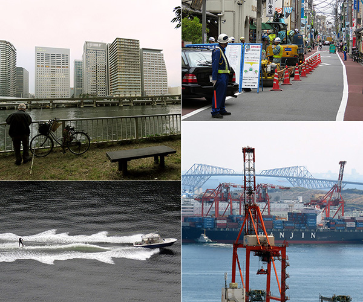

The contrasts of this enormous city
Tokyo is a big city, but what it differs from other big cities in the world are the contrasts that can be found everywhere and makes this city unique.
Work and Leisure
Tokyo is known to be a city of work, but you can find leisure there also. People fishing, running, swimming or even quiet reading a book.
Modern and traditional
Modern elements can be found in Tokyo as much as traditional elements. And all modern and traditional elements together create a unique harmony in this city.
Architecture: Japanese vs. Worldwide
You can find Japanese traditional architecture also in harmony with architecture from all over the world. For instance, the Statue of Liberty and Rainbow Bridge from Odaiba or English style Tokyo Station and Japanese style houses and garden can be side by side in harmony.
Crowded or empty?
Tokyo is known to be a crowded city. Everybody heard at least once about subway agents who push people inside the trains. Surprisingly, there are some oasis inside this busy city. Old, residential neighbourhoods experience quietness as countryside cities.